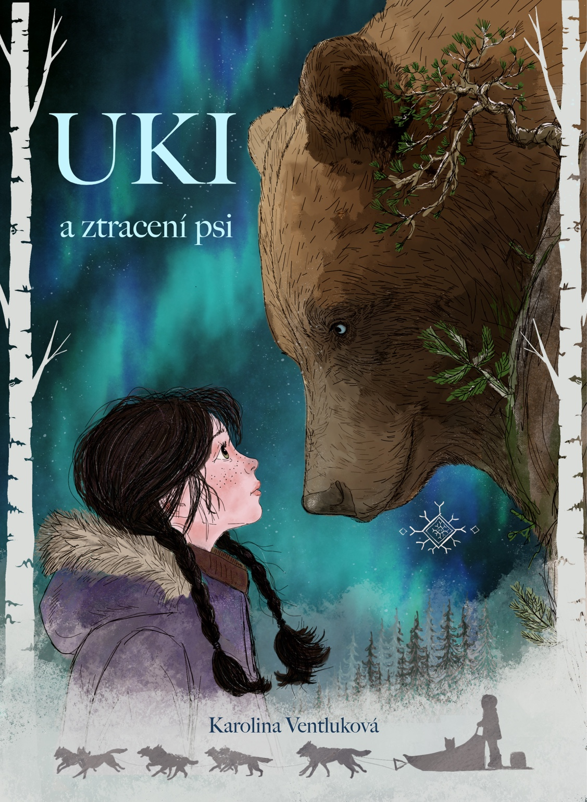

Mushing
MANMAT
Ze skutečného světa mushingu. Vybavení pro psy a prostředí, ze kterého dobrodružství Uki přirozeně vyrostlo.
Poznat MANMAT →Vyber si jednu ze stezek.

Co když z obyčejného rybaření vznikne pořádný průšvih?
Nikdy nejezdi za starý viadukt. V Honkavaaře to ví každé dítě. Jenže když osm tažných psů vyrazí za bílým losem, Uki už na výběr nemá.
Podívej se za obrázky, příběhem i zvuky světa Uki.
Uki a ztracení psi míří do předprodeje na Pointě. Aby mohla kniha opravdu vzniknout v podobě, jakou si zaslouží — v pevné vazbě, s původními ilustracemi, profesionální redakcí a sazbou — potřebuje nejdřív podporu svých budoucích čtenářů.
Objednávkou v předprodeji si zajistíš svůj výtisk a zároveň pomůžeš Uki udělat poslední krok z příběhu na papír.
Obě tlačítka vedou na stránku Uki a ztracení psi na Pointě.
Uki ještě přes starý viadukt nepřešla. Ale už teď má kolem sebe partu, která čte, škrtá, skládá a hlídá, aby se neztratila ani čárka:
Každá umí něco jiného. A obě se k Uki hodí až podezřele dobře.
Ze skutečného světa mushingu. Vybavení pro psy a prostředí, ze kterého dobrodružství Uki přirozeně vyrostlo.
Poznat MANMAT →Finsko, Laponsko a cesty za krajinou, ze které svět Sillanmaa čerpá svou zimní atmosféru.
Vydej se na sever →